Communication User Interface
Tesla New UI V. 48 26
Marie
A conversational assistant for elderly citizens to provide a A.I. based, personalized, touchless, and safe driving experience.
Team
Hannah Moon
Brandon Hyun
Stella Yan
Emily Zhang
Time
7 weeks at CMU HCI
Role
Communication Flow Design
Visual Design
Analyst
Tool
Voice Flow
After Effect
Figma
Illustrator
Project Objective
The use of Autonomous vehicle industry is growing as it solves many pain points that people faces. In fact, Autonomous Vehicle Sales predicts to surpass 33 Million Annually in 2040. It enables new autonomous mobility in more than 26 Percent of new car sales.
"How might we provide elderly citizens with hands free and hectic free autonomous driving experience through Speaking Dialog Technology ?"
We began our design journey with an objective of desining a voice bot for elderly citizen, including the ageing 'Baby Boomers' generation.
Design Outcome
Marie is designed to tackle problems associated with elderly drivers. Elderly citizenss no longer have to fear for experiencing cognitive burden of remembering forgetful events on the go and do not have to fear for the day they can't operate their vehicles without receiving proper care that they need when they experience emergency situations. Marie keeps people like elderly drivers happy and healthy.
Moment No.1
Buying a gift for love ones
Moment No.2
Playing Games with CUI
Moment No.3
Detect Emergent Condition
Moment No.4
Contacting Supporting Agents (ex.ER)
Design Process
Explatory Research
When thinking about situations and experiences that might benefit from a coversational assisant and building a Communicational User Interface (CUI), incorporting in such technology with self-driving industry can be a game changer. Driving is task-based, usually requires both cognitive and physical strengths. There is an opportunity for a virtual self-driving assistant to aid elderly drivers to enjoy risk free driving experiences.
Target Business
I choose Tesla's New UI V. 48 26 for UI interaction in addition to designing a CUI because of its innovative products, incorporated services, mission, vision, and strong brand identity. Tesla is a leading company accelerating the world's transition to sustainable energy with electric cars.
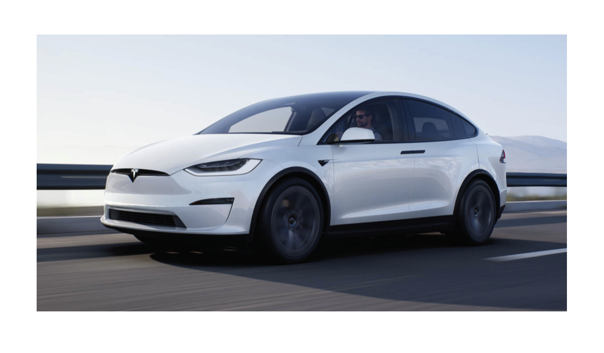
Context and Scope of CUI
Target User
Health issues can interfere with driving when you are aging. More and more elderly people are giving up their freedom of mobility and social life.
The recent study shows that almost 7,700 older adults(aged 65 plus) were killed in motor vehicle crashes, and more than 257,000 were treated in emergency departments for car crash injuries in a year. This means that each day, approximately 20 older adults are killed, and an additional 700 are injured in motor vehicle crashes. It is also predicted that by 2030, 25% senior will be responsible to fetal car crashes. It is five times higher than the other age group.
Through user research, we created a persona that would represent our product, who is losing confident of driving a car.
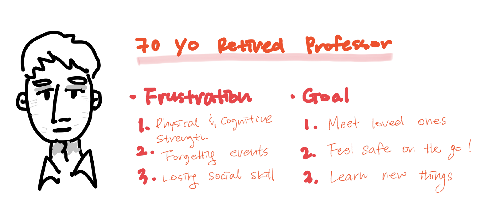
Insights and Design Direction
Our research yielded 3 main insights that guided our design decisions.
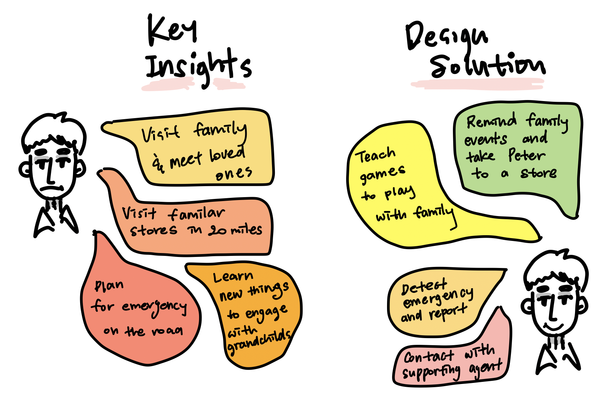
Building Scenarios
To develop our idea, we created a journey map to analyze our objectives and means for developing CUI. One of the important components that we found was that there seemed to be no emotional and emergency support for elderly drivers from the current auto driving systems in the market. Although emergencies are very stressful situations, as highlighted in the user journey map, it can be mitigated with well designed CUI and visual interface.
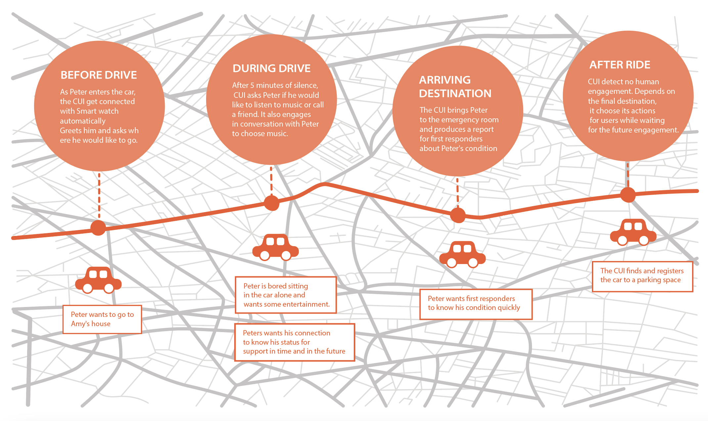
Communication User Interface Design
Draft
We begin to write an initial script to understand situational dialog.
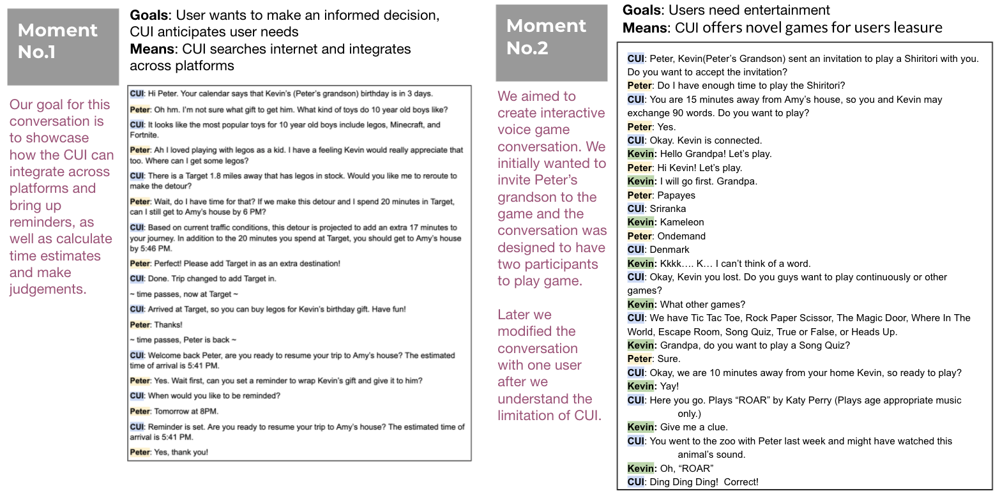
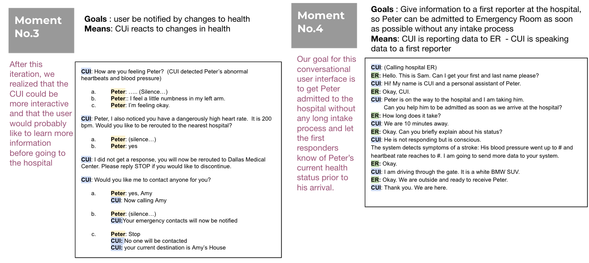
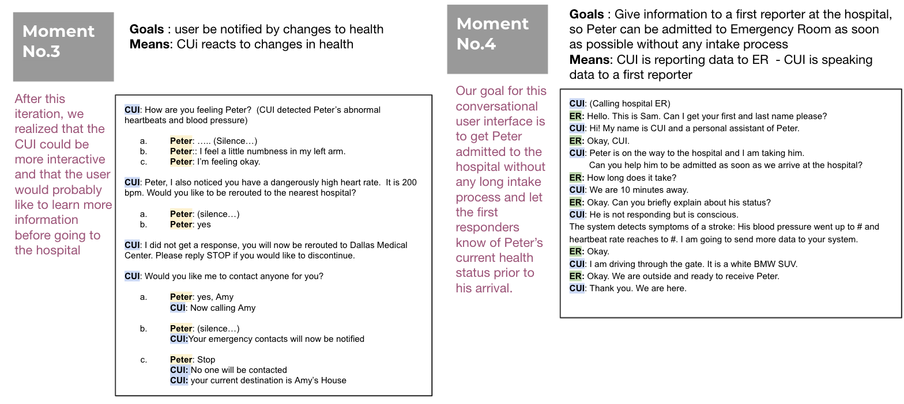
Iterations & Final Script with Utterance
After considering the goals and means of Peter, we decided the controlling and delegating exchanges would not allow the CUI to demonstrate its initiative. On the opposite end, guiding made the CUI have too much control. Ultimately, we chose collaborating, so the CUI and Peter could both contribute to the final outcome.
Then, we pick the best style of CUI and Users’ conversation for each moment and glue them together seamlessly.
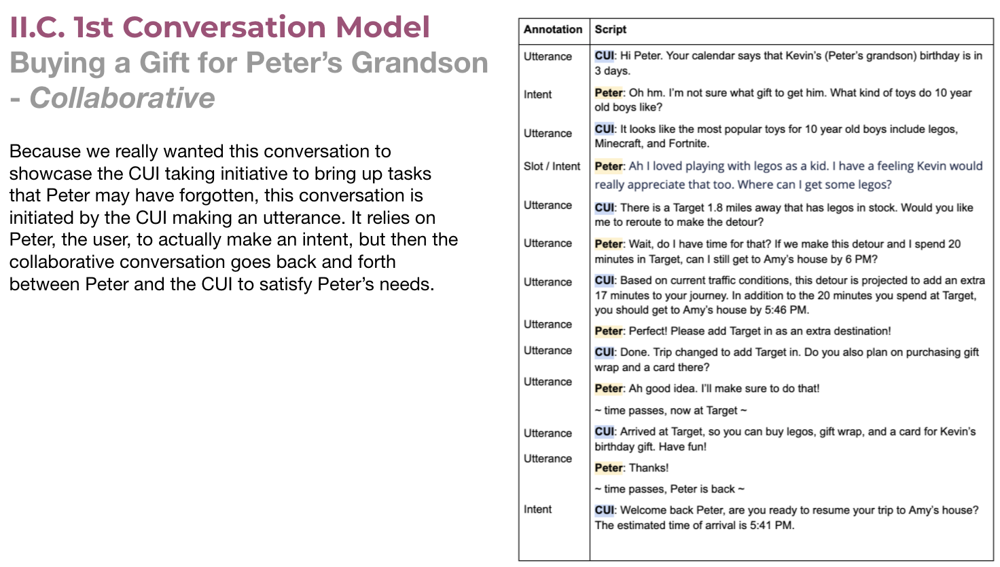
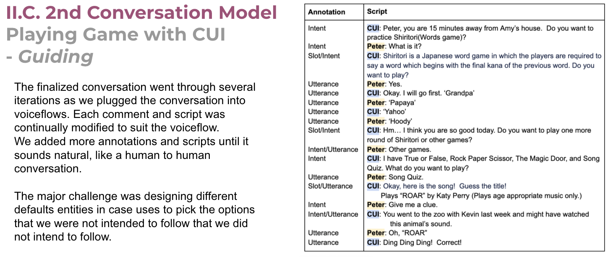
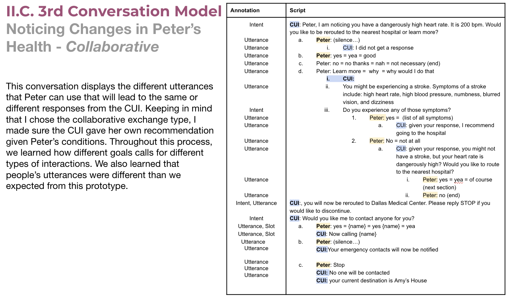
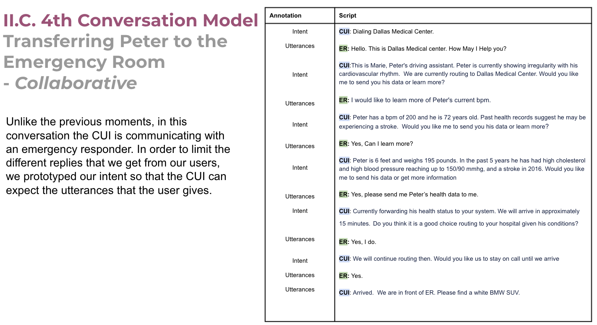
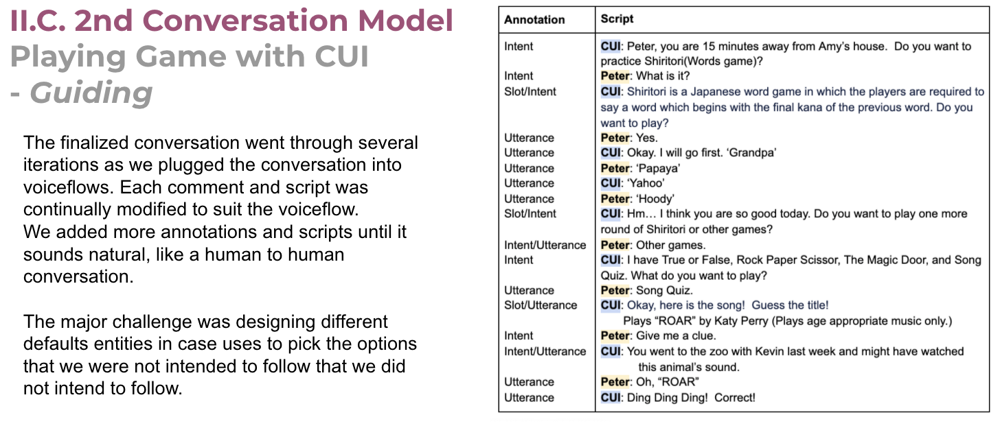
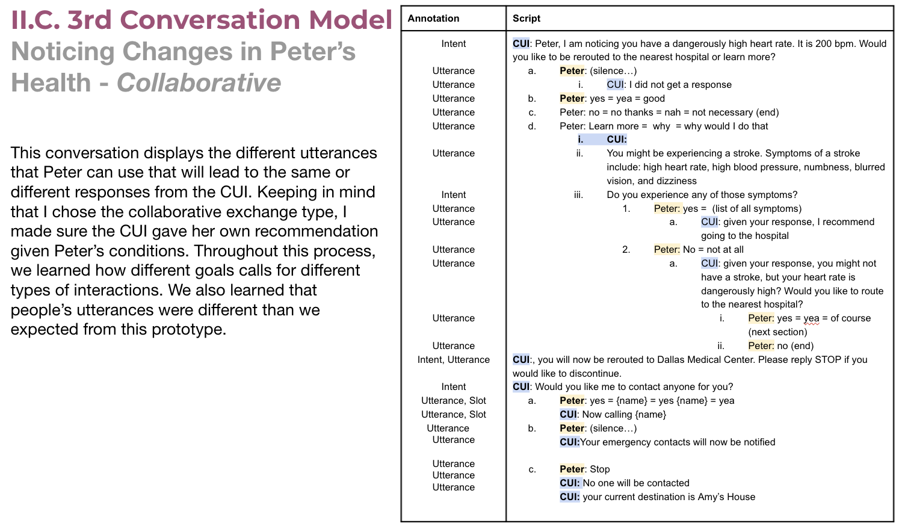
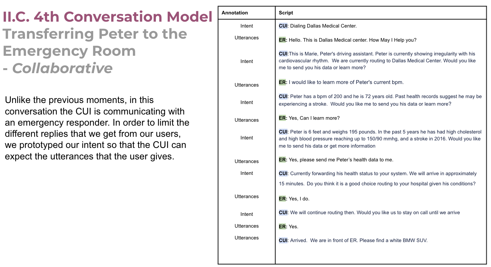
{kind=link}
Reflection
Living with and utilizing CUI became new normal. We play music by uttering “Alexa, play music!” or “Alexa, set up an alarm!” Living in a new normal life, how might we interact with CUI while receiving adequate support to achieve humans’ goals?
I aimed to find an answer while working on this project.
Like MIT Professor Sherry Turkle said, “A lot of people care about her ‘little life,’” our team cares about Peter(Persona)’s life and created Marie to give him his social life and mobility back. Building CUI along with a persona’s compelling life story penetrated into each development phase throughout this project. This project amalgamated our team’s tears, blood, sweat, and smile into each development paces: Drawing our key user’s journey map, Identifying pains, Offering solutions, and Developing a prototype.
The big takeaway is that to enable emotional CUI to interact effectively with users, the CUI should be designed to have empathy and understand human’s emotional expression. The CUI should be able to recognize users’ needs and read underlying intentions to offer support at the right timing. Recognizing those emotional fine lines is challenging, so we, interaction designers, should design CUI purposefully to develop a user-friendly emotional CUI by understanding human’s emotional expression.